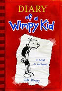

My Favorite Books
Diary of a Wimpy Kid

This series by far has to be one of most favorite series I ever read. When the books first came out, I was in sixth grade, and now as I am a rising freshmen, I am anticipating for the thirteenth book. The books are extremely funny and guaranteed to make anyone laugh.
Genius Files

Genius Files is also one my most favorite series. Unfortunately, the series ended few years ago, but I still reread the books every now and them. The plot of the book was so unique and interesting. Also, there was tons of action and jokes were cracked often.